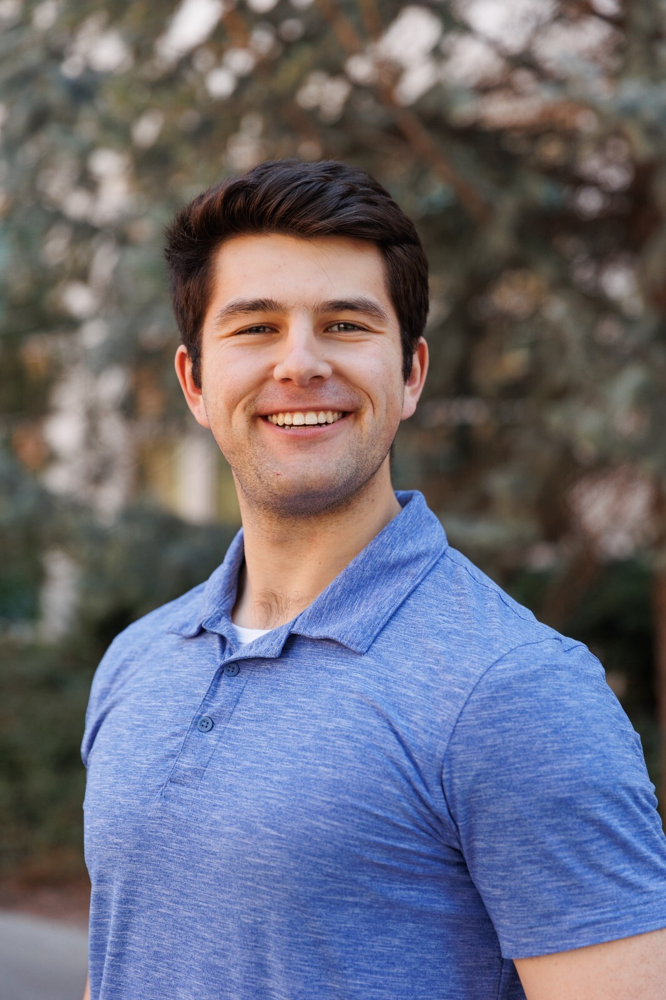

Research · NLP
AI Translation Pipeline
Built a translation pipeline using SentencePiece tokenization and transformer-based models, then evaluated results with BLEU and ChrF metrics.
Computer science · BYU
I’m Dexter, a computer science student exploring machine translation, machine learning, and thoughtful automation. I like turning complex problems into useful, dependable tools.

A little about me
I’m pursuing a B.S. in Computer Science at Brigham Young University, with a 4.0 GPA and an expected graduation in May 2028.
My hands-on experience spans machine translation research and software automation. I’m especially interested in how machine learning can make communication and everyday systems work better.
Coursework includes Agentic AI, Computer Systems, Data Structures and Algorithms, Advanced Software Construction, Machine Translation, Machine Learning, and Data Science.
Selected work
A few ways I’ve used research and engineering to make software more useful, measurable, and reliable.
Research · NLP
Built a translation pipeline using SentencePiece tokenization and transformer-based models, then evaluated results with BLEU and ChrF metrics.
Automation · QA
Automated internal GUI testing workflows with WebDriverIO and Selenium to reduce manual testing and improve reliability.
Engineering · Observability
Enhanced logging infrastructure to make production systems easier to trace, understand, and debug.
Experience
Supported multilingual translation model development and processed datasets with 50k+ sentences for training and evaluation.
Automated GUI workflows with WebDriverIO and Selenium and improved system logging infrastructure.
Led a four-person vulnerability assessment team and delivered a mitigation plan adopted by IT staff.
Beyond the classroom
I value showing up for my community, taking initiative, and continuing to learn.
B.S. in Computer Science, Brigham Young University
Expected May 2028 · GPA 4.0
Python, C++, Java, JavaScript, SentencePiece, BLEU, ChrF, Selenium, WebDriverIO, Splunk, data processing, Spanish, mentoring.
Get in touch
I’m always happy to talk about research, engineering, or new opportunities. Send me a note and let’s start a conversation.